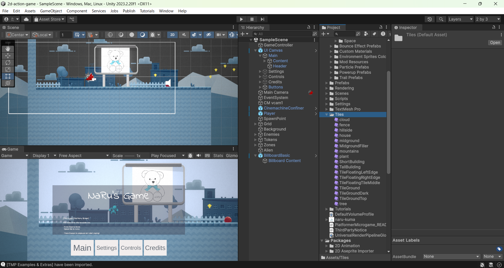

世界の色を変えよう 〜色で自分だけの世界観をつくる〜
🎯 この章でできるようになること
- Tilesアセットのスプライトを別の色に切り替えて、木や建物の色を変えられる
- マテリアルをドラッグして、レベル全体の見た目を一気に変えられる
- プレイヤーにトレイル（軌跡）をつけて、動きにスピード感を出せる
- 空（カメラの背景）とレベルの色合いを変えて、世界観を統一できる
今日はコードを1行も書きません。
変えるのは「色」だけ。
それなのに、ゲームの印象はびっくりするほど変わります。
前回のプロジェクトが開けない人は、第1章の手順で「Platformer Microgame」をもう一度インポートすれば大丈夫。
今日の内容はそこからでも追いつけるよ。
3-1. 色が世界観をつくる
同じステージでも、空が明るい水色なら「昼の冒険」、濃い紫なら「不思議な夜の世界」、赤っぽければ「危険な火山地帯」。
ゲームの世界観（どんな世界なのか、という雰囲気）は、色でほとんど決まります。
Platformer Microgameでは、次の場所から世界の色を変えられます。
| 変える場所 | 変わるもの |
|---|---|
| Tilesのスプライト | 木・建物など、パーツごとの色 |
| マテリアル | レベル全体の質感・見た目 |
| Main CameraのBackground | 空の色 |
| LevelのColor | 世界全体にうっすらかかる色合い |
| トレイル | プレイヤーの動きの演出 |
キャラクターも木も建物も雲も、この世界は全部スプライトでできている。
色や光り方などの見た目の設定がひとまとめになっていて、貼りかえるだけで雰囲気を変えられる。
色の輪や四角の中をクリックして好きな色を作れる。RGBの数値で指定することもできる。
3-2. タイルの色を変えよう（色のスプラッシュ）
あなたの世界はたくさんのTiles（タイル）でできています。
建物、樹木、フェンス、雲など、ぜんぶタイルです。
まずは木のスプライトを別の色に切り替えてみましょう。
ProjectウィンドウでTilesフォルダに移動して、treeアセットを選択します。

Inspectorの丸い切替ボタンをクリックすると、スプライトの一覧が出てきます。
tree_greenのような、別の色のTreeスプライトをリストから選んでみましょう。
シーンの中の木が、一斉に選んだ色に変わります。
1本だけじゃなくてステージ中の木が全部変わったのに気づいた？
シーンの木はみんな同じtreeスプライトを見ているから、大元を変えると全部に反映されるんだ。
世界の色を統一したい今日は、これがむしろ便利！
同じやり方で、雲・フェンス・建物など、Tilesフォルダのほかのアセットも好きな色に変えてみよう。
3-3. マテリアルで世界の見た目を一気に変えよう
1つずつスプライトを変えるだけでなく、マテリアルを使うとレベル全体の見た目をまとめて変えられます。
ProjectウィンドウでCustom Materialsフォルダを探して開きます。
中に、用意されたマテリアルがいくつか入っています。
好きなマテリアルを選んで、Sceneビューのレベルの一部にドラッグします。
ドラッグした場所だけでなく、そのタイルマップ全体にマテリアルが適用されます。
いくつか付けかえてみて、自分の世界に合うものを探してみよう。
3-4. プレイヤーにトレイル（軌跡）をつけよう
次は色に「動き」をプラス。
キャラクターが動いたあとにトレイル（軌跡）が残るようにして、走りやジャンプにスピード感を出します。
流れ星のしっぽみたいなイメージ。速く動くほどかっこよく見える。
ドラッグするだけで、同じ部品をいくつでもシーンに置ける。今回はトレイルの完成品プレハブを使う。
HierarchyでPlayerのGameObjectを見つけて選択します。
次にProjectウィンドウで、Mod Assets → Trail Prefabsの順にフォルダを開きます。
3つのプレハブが入っているので、好きなものを1つ選びましょう。
選んだプレハブを、HierarchyのPlayerのGameObjectにドラッグします。
トレイルがPlayerの子オブジェクトになって、プレイヤーと一緒に動くようになります。
▶（再生）を押して、歩き回ったりジャンプしたりしてみよう！
キャラクターの後ろに軌跡がついてくれば成功。
確認できたら、必ず▶をもう一度押して停止してから次に進もう（理由はこのすぐ下！）。
🚨 超重要ルール（再掲）: 再生中（▶が青いとき）の変更は保存されない！
色の変更もトレイルの追加も、必ず停止してから行おう。
再生中にいじった内容は、停止した瞬間にぜんぶ元に戻ってしまう。
「せっかく作った世界が消えた！」の原因ナンバーワンだよ。
色をいじる前に、画面上の▶が押されていない（青くなっていない）ことを確認する習慣をつけよう。
3-5. 空とレベルの色合いを変えよう（色合いの世界）
仕上げは世界全体の色。
空の色とレベル全体にかかる色合いを変えて、自分の世界観を完成させます。
HierarchyからMain CameraのGameObjectを探して選択します。
InspectorでCamera → Environment → Backgroundのフィールドをクリックすると、カラーピッカーが開きます。
好きな色を選んで、空（Sky）の色を変えましょう。
Hierarchyの中からGridのGameObjectを見つけて、左のドロップダウン矢印をクリックして展開します。
子オブジェクトのLevelを選択しましょう。
InspectorのColorフィールドをクリックするとカラーピッカーが開くので、色を選んでレベル全体の色合いを変えます。
こちらは「絵を描きかえる」のではなく、レベル全体にうっすら色をかけるイメージ。
夕焼けのオレンジ、夜の青紫など、時間帯や気温まで表現できるよ。
▶（再生）をクリックして、変わった世界を歩き回ってみよう。
空・地面・トレイル、ぜんぶ合わせてどんな世界に見えるかな？
停止してから、Ctrl + S⌘ + Sで保存しよう。
せっかく作った世界が消えないように、区切りごとの保存を習慣に。
3-6. 💪 やってみよう
課題1: 自分のテーマカラーで世界を統一しよう
まず「夕焼けの町」「深海」「お菓子の国」「夜の森」など、テーマを1つ言葉で決めてから、
タイル・マテリアル・空・色合い・トレイルをそのテーマに合わせて選び直そう。
バラバラに好きな色を置くより、テーマで統一したほうがぐっと「作品」っぽくなるよ。
ヒントを見る
色に迷ったら、テーマの実物を思い浮かべよう。
夕焼けなら「空はオレンジ、地面は影になって暗め、色合いは赤っぽく」。
空と地面の明るさに差をつけると、キャラクターが見やすくなるよ。
課題2: トレイルを主役にしよう
Trail Prefabsの3種類をぜんぶ付けかえて試して、自分のテーマに一番合うトレイルを選ぼう。
走ったときとジャンプしたときの見え方を両方チェックしてね。
ヒントを見る
付けかえるときは、Hierarchyで前のトレイル（Playerの子オブジェクト）を右クリック→Deleteで消してから、新しいプレハブをドラッグしよう。
背景が濃い色の世界なら、明るい色のトレイルがよく映えるよ。
課題3（チャレンジ）: 正反対の世界を2つ作って見比べよう
「昼と夜」「天国と火山」のように、正反対の世界観を2パターン作ってみよう。
1つ目ができたらスクリーンショットを撮ってから、色を変えて2つ目を作る。
できたら家族や友だちに見せて、「どんな世界に見える？」と聞いてみよう。
自分の狙いどおりに伝わったら大成功！
ヒントを見る
ステージの形は同じままでOK。
色だけでどれだけ印象が変わるかを実験するのがこの課題の狙いだよ。
空の色と色合い（LevelのColor）の2つを変えるだけでも、まったく別の世界になる。
3-7. 🚨 つまずきポイント集
再生を止めたら、変えた色がぜんぶ元に戻った
原因: 再生中（▶が青いとき）に色を変えてしまった。
再生中の変更は、停止すると必ず元に戻る。
直し方: ▶を押して停止してから、もう一度色を変えよう。
「いじる前に▶を確認」を合言葉に。
カラーピッカーで色を選んだのに、見た目が変わらない
原因1: カラーピッカーのA（アルファ＝透明度）が0になっていて、透明になっている。
原因2: 変えたいものと別のオブジェクトを選んだまま色を変えている。
直し方: カラーピッカーのAの値を一番大きく（255）してみよう。
それでもダメなら、Hierarchyで正しいオブジェクト（Main CameraやLevel）を選び直してからやり直そう。
木を1本だけ変えたいのに、ぜんぶ変わってしまう
原因: 故障ではなくUnityの仕組み。
シーンの木はみんな同じtreeスプライトを共有しているので、大元のスプライトを切り替えると全部に反映される。
直し方: 世界の統一が目的の今日はそのままでOK。
どうしても1本だけ変えたいときは、Sceneビューでその木だけをクリックして選び、InspectorのSprite RendererにあるColorを変えると、その1本だけ色合いを変えられるよ。
トレイルが出ない
原因: プレハブをPlayerではなく、シーンの何もないところにドラッグしてしまい、Playerの子オブジェクトになっていない。
直し方: HierarchyでPlayerの左の矢印を開いて、トレイルが子オブジェクトとして入っているか確認しよう。
外にある場合は、Hierarchy上でトレイルをPlayerの上にドラッグすれば子にできる。
空の色の設定（Background）が見つからない
原因: Main Cameraではなく別のオブジェクトを選んでいる、またはCameraコンポーネントのEnvironmentが折りたたまれている。
直し方: HierarchyでMain Cameraを選び直そう。
InspectorのCameraコンポーネントの中のEnvironmentをクリックして開くと、その中にBackgroundがある。
Custom MaterialsやTrail Prefabsのフォルダが見つからない
原因: Projectウィンドウの検索欄に前の検索文字が残っている、または別のフォルダの中にいる。
直し方: Projectウィンドウの検索欄を空にして、いちばん上のAssetsからフォルダを順にたどり直そう。
それでも見つからないときは、検索欄に「Custom Materials」「Trail Prefabs」と入力して探せるよ。
💡 15分たっても直らないときは、次の「AIを味方につけよう」の方法で相談してみよう。
3-8. 🤖 AIを味方につけよう
今日の作業はエラーが出ないぶん、「どの色にすればいいか分からない」「設定の場所が見つからない」という詰まり方が多くなります。
AIは配色の相談役としても優秀。
ただし最後に「いいな」と決めるのは自分の目です。
この章でのAIの使い所
✅ 良い使い方 — 自分で15分試してから聞く
- 配色のアイデア出し: テーマを伝えて、色の組み合わせを何パターンか提案してもらう
- 設定が見つからないとき: 「〇〇の設定項目がどこにあるか」を具体的に聞く
そのままコピペで使えるプロンプト（AIへの指示文）の例:
ゲームの世界を「夜の街」の雰囲気にしたいです。
空の色・地面の色合い・トレイルの色の組み合わせを、RGBの数値つきで3パターン提案してください。
Main CameraのBackgroundの色を変えたのに、Gameビューの空の色が変わりません。
確認すべきポイントを順番に教えてください。
🚫 やめておこう
- 課題1の配色を丸ごとAIに決めさせて、そのまま設定するだけにする（実際に画面で見ると印象が違うことが多い。
必ず自分の目で見て微調整しよう。それが「センス」の練習！） - AIの答えをそのまま信じる（AIは古いバージョンのUnityの画面・メニュー名で説明することがある。
必ず自分の画面のメニュー名と見比べよう）
3-9. ✅ チェックリスト
全部チェックできたら第3章クリア！
🎉 次の章では、この世界に動きやしかけを足して、もっとゲームらしくしていくよ。
3-10. 📚 もっと知りたい人へ
- Unity Learn — Unity公式の学習サイト。
Platformer Microgameの改造レシピもここにあるよ - Trail Renderer 公式マニュアル（日本語） — トレイルの太さや長さを自分で調整したくなったら
- マテリアル 公式マニュアル（日本語） — マテリアルの仕組みをもっと知りたい人へ